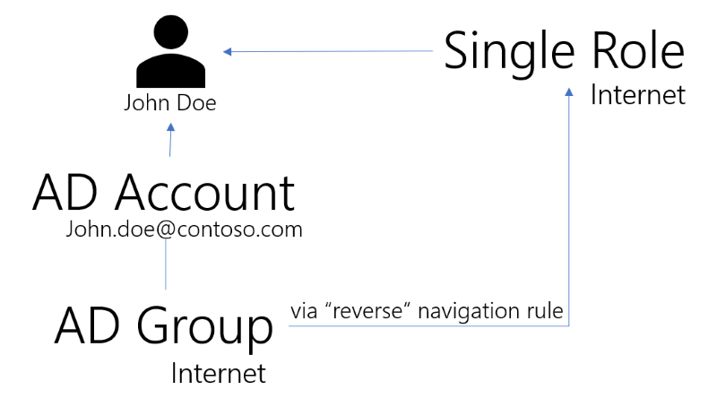

Existing Assignments
The Compute Role Model Task can deduce from synchronized data a list of assignments for every identity.
Overview
One of the main responsibilities of the Compute Role Model task is to translate data from the realm of the managed systems (such as accounts or groups) into the realm of roles.
The process results in a list of existing assignments, expressed as assigned roles, for every identity.
This is Identity Manager's first computation when deployed in an organization: assessing the current state of the managed system in order to suggest fixes.
The main process can be summed up as:
- Finding the owner
Oof a resourceRby applying correlation rules. - Deducing roles by applying provisioning rules (such as navigation or scalar) "in reverse". In this step, Identity Manager tries to find the role that would have yielded a provisioning order for resource
R, if assigned to identityO.
The following use cases can be encountered.
Use Case 1: One Group, One Role
This first use case involves a common role model situation: one single role represents one entitlement, for example an Active Directory group.
Let's study this use case with an example: a single role Internet is linked to an Active Directory group Internet through a navigation rule N.
We are going to consider here an identity named John Doe, and his Active Directory account john.doe@contoso.com.
The most straightforward way to think about this role model is to consider the direct flow. This would happen if John Doe's account wasn't a member of the Internet group.
- Identity Manager performs the first synchronization, and correlates the nominative Active Directory account john.doe@contoso.com to John Doe.
- This account is not a member of the AD group Internet.
- A manager assigns the role to John Doe's identity using Identity Manager's UI.
- The Compute Role Model task applies the navigation rule
N. - A provisioning order for John Doe's Active Directory account becoming a member of the group Internet is issued.
This is a typical onboarding scenario for John Doe that happens to start a new job within the organization after Identity Manager was deployed.
Now, let's consider what happens for John Doe, if he started his job within the company before Identity Manager was ever deployed.
The initial situation is an identity, John Doe, and a "lonely" Active Directory account, john.doe@contoso.com.
This time, Identity Manager performs the "deduction" flow.
Identity Manager performs the first synchronization and tries to correlate accounts with identities. This results in finding out that John Doe is the owner of the Active Directory account john.doe@contoso.com. The synchronization also shows that the john.doe@contoso.com account is a member of the Internet Active Directory group.
The situation in Identity Manager database at this point is the following.
Integrators have defined the Internet single role and linked it to the Internet AD group through the navigation rule N.
Now, the Compute Role Model task "studies" the role model: the only rule that assigns the Internet Active Directory group is the navigation rule N. By following the rule in reverse, Identity Manager deduces that the role Internet should de facto be assigned to John Doe, so that the rules be consistent with the data found in the Active Directory.
The role is now listed under John Doe's assignment list (permissions) in Identity Manager.

Use Case 2: Several Groups, One Role
This second use case involves another common role model situation: one single role represents two or more entitlements. The single role is used here to package several Active Directory group assignments, for example, assignments which are always granted together to perform certain tasks.
For example, let Sales manager be a single role linked to the Active Directory groups operations and sales through two navigation rules N1 and N2.
The "direct" flow here means that if John Doe is assigned the Sales manager role, Identity Manager fulfills the operations and sales group memberships for John Doe's Active Directory account.
Now, let's consider the reverse flow. If John Doe already had membership for the operations and sales group before Identity Manager was deployed, the AD Synchronization will detect it. By applying N1 and N2 in reverse, Identity Manager deduces that John Doe must have the Sales manager single role.
His trusted advisor, Mary Webster, isn't a member of the operations group. She is only a member of the sales group. Identity Manager applies N1 in reverse, but there is only one Single Role (Sales manager) that grants the sales group membership. The only way for Mary to be granted the sales group membership from the role model point-of-view is to have been granted the Sales manager role. For Identity Manager, it is as if Mary had been assigned this role, but is missing the operations group. That is exactly how it is materialized: the identity for Mary in Identity Manager will be assigned the Sales manager role, and a missing group membership will come up in the provisioning review screen.
If the IGA administrator doesn't want Mary to be granted the Sales manager role and hence the operations group, another role must be created, that only grants the sales group but not the operations group.
Use Case 3: Several Groups, Several Roles
The third use case is a less common one, but can still be a little confusing.
Let's take two roles B and C.
Bgrants membership to two groups:AD1andAD2.CgrantsAD2andAD3.
This time, if only AD2 is found for a given user, no deduction can be made.